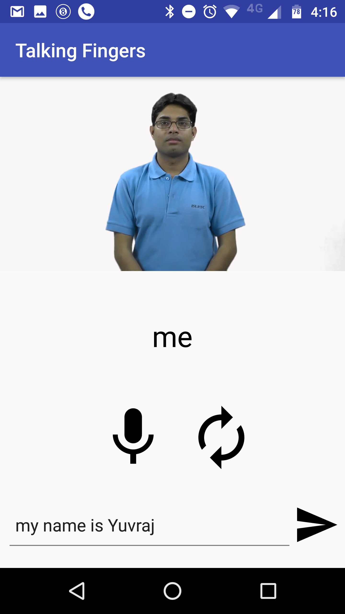

SOURCE CODE : https://github.com/talking_fingers
Developed By : Yuvraj Jaiswal
There are around 63 million hearing impaired people in India according to the Census, 2011. 55% of those are dependents on some or the other and unable to earn livelihood for themselves. Lack of communication is a big problem in contributing towards this where the hearing impaired cannot understand others and vice-versa, which hinders their employability to great extent.
There are a lot of apps available that convert English to American Sign Language. However, such apps are not usable in Indian context sign the Indian Sign Language differs significantly from American Sign Language in terms of vocabulary (the signs) as well the grammar.
While ASL follows a grammar similar to English, the grammar of Indian Sign Language is somewhat similar to Hindi or other Indian Languages. Also, the grammar strcuture of ASL allows word by word conversion to sign, which is not possible in ISL
There are a lot of Speech to Text Apps already in the market and one may think that such a solution might be useful. However this was not the case as further research pointed out.
The non-hearing impaired people learn to speak first and then develop reading/writing as well as learn languages. For us, the basic unit of understading is sound and it's relation to an object, action etc.
However, there is no concept of sound among the hearing impaired . For them, all the languages are same, just a collection of symbols with a collective meaning in terms of an action (sign). That sign is further related to an object/action etc. This makes reading very non-intuitive as well as slow, thereby making the Speech-to-Text solution not very effective.
Before the discussion of the solution, it is important to understand about Indian Sign Language. Here are some features of ISL:
1.The vocabulary of English words is used. (Signs are mapped to English words).
2.There are no helping verbs, articles, fillers etc. (e.g. is,are,a,an,be, etc.).
3.The grammar is similar to Indian Languages like Hindi.
4.Sentence follow the structure of
(SUBJECT PHRASE) (OBJECT PHRASE) (VERB) (QUESTION) (NEGATION)
5. All verbs are used in base form (e.g. running -> run).
6. There are no plurals. Numbers are words like "many" are used to denote plurals.
7. There is no temporal inflection among words. Words like "before","after" and "now" are used to put context of time.
8. Sentence are short,simple and consist of a single argument.
E.g. What is your name ? => Your name what?
E.g. My name is Yuvraj. => me name Yuvraj.
An android app which translated Spoken English to Indian Sign Language in real time. Google Speech to Text APIs are used to convert spoken English to text. The text is then send to a backend server which sends it to a parser.
FLOW
Parser uses NLP and grammar rules of ISL to convert English to ISLE (Intermediate Sign Language English), which is basically English in the grammar of Indian Sign Language.
Complex words and wordsfor which there are no videos in the repo are converted to simpler words using wordNeT. Verbs are converted to base form using POS, Stemming and Lemmatization. The ISLE sentence thus generated is sent back to android device.
The device pulls up videos stored in local storage for each of words and plays them. For words having no videos (proper nouns, complex words), the word is signed letter by letter.
TECH STACK : Stanford NLP, Python ,Flask, Android, Google STT APIs, WordNet
VOICE INPUT
TEXT INPUT
LETTER BY LETTER
REPLAY

1. Developing Sign Language to English Translator using OpenCV, IoT devices etc.
2. Adding more vocabulary videos.
3. Compressing videos/converting vidoes to GIFs to optimize space.
4. Making app run without internet.
5. Parsing complex sentences and making app semantics based (currently rule based).
6. Giving option to add personalized signs for words.